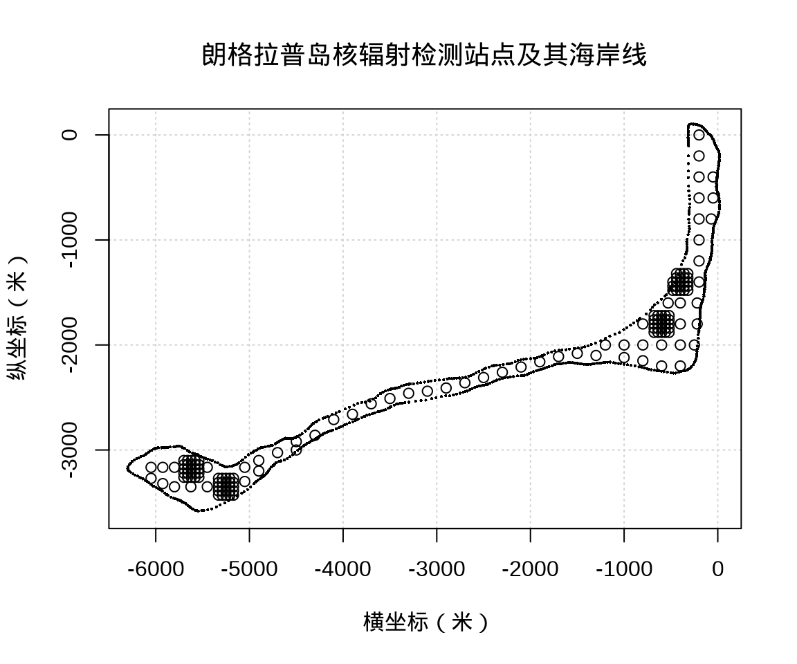
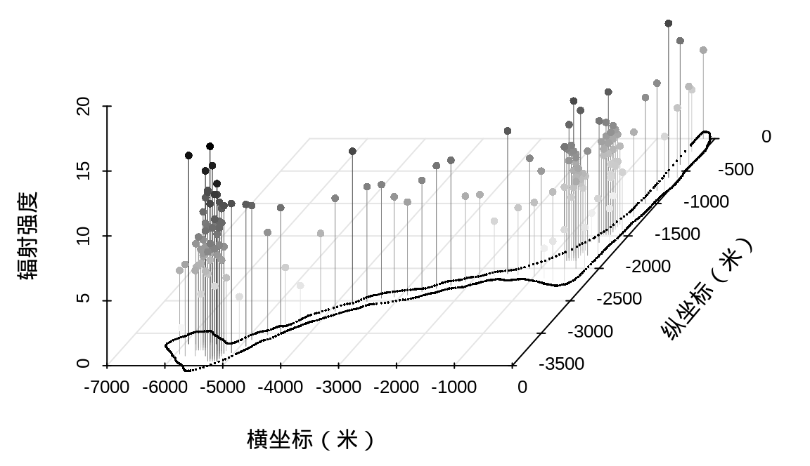
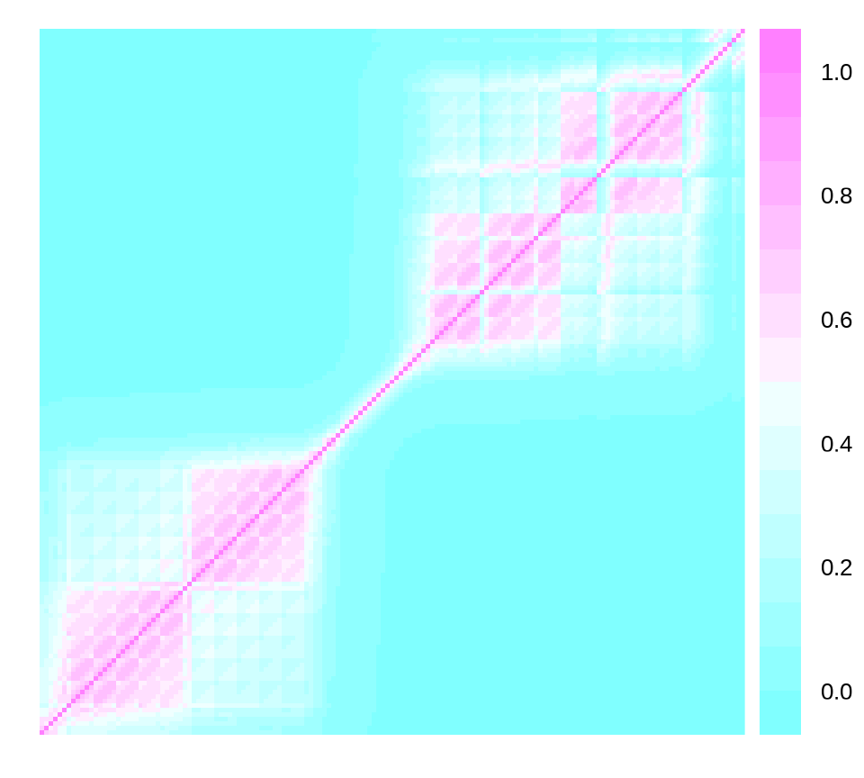
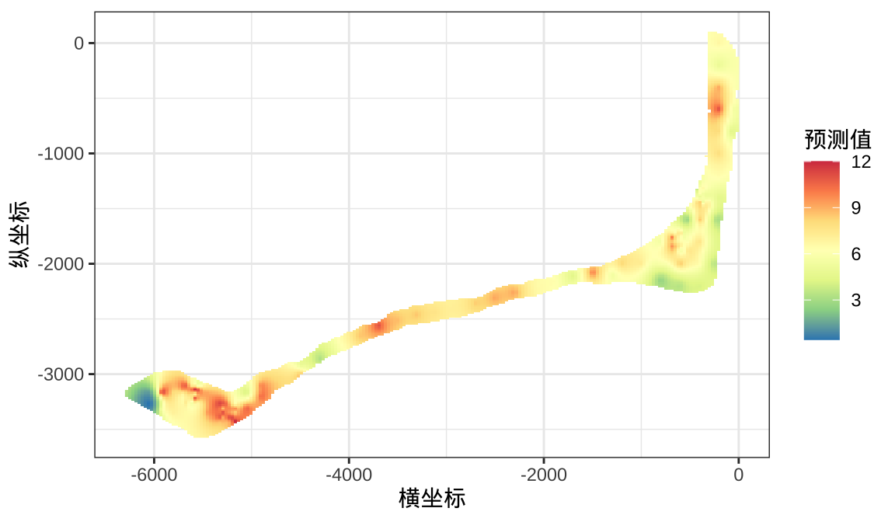

19 空间数据分析
本章开始介绍空间数据的分析过程，首先在 R 语言控制台加载如下几个 R 包。
接着加载本章所用的两个数据，分别是朗格拉普岛核辐射检测数据和海岸线坐标数据，后续将根据这两份数据预测全岛的核辐射分布情况。
这两个数据集的部分内容见下表，这些数据的采集点和朗格拉普岛的海岸线见下图。
代码
| 横坐标 | 纵坐标 | 数目 | 时间 |
|---|---|---|---|
| -6050 | -3270 | 75 | 300 |
| -6050 | -3165 | 371 | 300 |
| -5925 | -3320 | 1931 | 300 |
| -5925 | -3165 | 4357 | 300 |
| -5800 | -3350 | 2114 | 300 |
| -5800 | -3165 | 2318 | 300 |
| 横坐标 | 纵坐标 |
|---|---|
| -5509.236 | -3577.438 |
| -5544.821 | -3582.250 |
| -5561.604 | -3576.926 |
| -5580.780 | -3574.535 |
| -5599.687 | -3564.288 |
| -5605.922 | -3560.910 |
代码

这个数据集内容比较简单，写作上也容易一些。作为空间数据分析方法的介绍已然足够，它具有空间数据的一般性，包含横纵坐标，研究目标及区域。
朗格拉普岛上各采样点的辐射强度见下图，这是一个三维散点透视图，是采用 scatterplot3d 包绘制的，相比于上图，多了辐射强度数据。图中每个线段一端表示采样点的位置，另一端表示辐射强度值，线段越长代表辐射强度越高。
代码
# 可选的替代三维图形
library(scatterplot3d)
# 将连续型数据向量转化为颜色向量
colorize_numeric <- function(x) {
scales::col_numeric(palette = "Greys", domain = range(x))(x)
}
# 添加颜色
rongelap_df <- within(rongelap, {
color <- colorize_numeric(counts / time)
})
plt <- with(rongelap_df, {
scatterplot3d(
x = cX, y = cY, z = counts / time,
xlab = "横坐标（米）", ylab = "",
zlab = "辐射强度", color = color,
mar = c(3, 3, 0, 1), cex.symbols = 0.75,
col.grid = "grey90", lwd = 0.5, grid = TRUE,
type = "h", angle = 45, pch = 16, box = FALSE
)
})
plt$points3d(
x = rongelap_coastline$cX,
y = rongelap_coastline$cY,
z = rep(0, nrow(rongelap_coastline)),
pch = 16, cex = 0.25
)
## 三维空间坐标转二维平面坐标
xy <- unlist(plt$xyz.convert(2200, -1500, 0))
## 添加 y 轴标签
text(xy[1], xy[2], "\n纵坐标（米）", srt = 50, pos = 2)
19.1 模型拟合
下面采用 nlme 包的 gls() 函数拟合模型，该函数使用广义最小二乘拟合模型，模型参数的估计方法采用了限制极大似然估计。
Generalized least squares fit by REML
Model: log(counts/time) ~ 1
Data: rongelap
AIC BIC logLik
184.4451 196.6446 -88.22257
Correlation Structure: Exponential spatial correlation
Formula: ~cX + cY
Parameter estimate(s):
range nugget
169.7469507 0.1092495
Coefficients:
Value Std.Error t-value p-value
(Intercept) 1.812914 0.1088036 16.66226 0
Standardized residuals:
Min Q1 Med Q3 Max
-5.5738539 -0.0690947 0.3461001 0.7385220 1.5715212
Residual standard error: 0.573967
Degrees of freedom: 157 total; 156 residual以上代码表示的模型结构如下：
\[ \log\big(Y(x)\big) = T(x) = \beta + S(x) + \epsilon \]
其中 \(Y(x)\) 表示位置 \(x\) 处观测到的辐射强度，辐射强度是随空间位置变化的随机变量， \(T(x)\) 记为辐射强度的对数，\(\beta\) 是截距项。空间随机效应 \(S(x)\) 假定是一个零均值平稳的高斯随机过程，空间随机效应 \(S(x)\) 与随机误差 \(\epsilon\) 是相互独立的，随机误差服从零均值方差为 \(\tau^2\) 的正态分布。则空间随机过程 \(T(x)\) 条件期望 \(\mathsf{E}[T(x)|S(x)] = \beta + S(x)\) 和条件方差 \(\mathsf{Var}[T(x)|S(x)] = \tau^2\) ，它的自协方差函数如下：
\[ \mathsf{Cov}\big(T(x_i), T(x_j)\big) = \sigma^2 \exp\big(- \frac{\|x_i - x_j \|_2}{\phi}\big) + \tau^2I_{\{i=j\}}. \]
它的自相关函数（Correlation function） \(\rho(u_{ij})\) 如下：
\[ \begin{aligned} \rho(u_{ij}) & = \mathsf{Corr}\big\{T(x_i),T(x_j)\big\} \\ &= \frac{\mathsf{Cov}\big(T(x_i), T(x_j)\big)}{\sqrt{\mathsf{Var}(T(x_i))\mathsf{Var}(T(x_j))}} \\ &= \frac{1}{\sigma^2 + \tau^2}\big(\sigma^2\exp(-u_{ij}/\phi) + \tau^2I_{\{i=j\}}\big). \end{aligned} \]
其中，\(u_{ij}\) 表示位置 \(x_i\) 与位置 \(x_j\) 的欧氏距离 \(\|x_i - x_j \|_2\) ，关于空间随机过程 \(T(x)\) 的半变差函数 \(V_{T}(u_{ij})\) 如下：
\[ \begin{aligned} V_{T}(u_{ij}) &= \frac{1}{2}\mathsf{Var}\{T(x_i)-T(x_j)\} \\ &= \frac{1}{2}\mathsf{E}\{[T(x_i)-T(x_j)]^2\} \\ &= \tau^2I_{\{i=j\}} + \sigma^2(1-\rho(u_{ij})). \end{aligned} \]
在 nlme 包的记号之下，带块金效应的指数型自相关结构如下：
\[ \begin{aligned} \hat{\rho}(u_{ij}; \phi, \delta ) = \delta + (1 - \delta) (1 - \exp(- u_{ij}/\phi)). \end{aligned} \]
其中，记 \(\delta = \frac{\tau^2}{\tau^2 + \sigma^2}\) ，值得注意，此处的自相关结构并不等同于前面的自相关函数，它与半变差函数的关系如下：
\[ \hat{\rho}(u_{ij}; \phi, \delta ) = V_T(u_{ij}) / (\sigma^2 + \tau^2). \]
这个重参数化的目的是软件实现上的方便，单独估计模型参数 \(\tau^2\) 和 \(\sigma^2\) 存在可识别问题，转而估计其比值则大大改善可识别性问题，它是噪声与总方差的比值，或者说作用等同于信噪比。为了说明自相关函数 corExp() 及各个参数的作用，设置 \(\phi = 1,\delta=0.2\) ，示例如下：
[,1] [,2] [,3] [,4] [,5]
[1,] 1.0000000 0.5617508 0.3944550 0.2769817 0.1944934
[2,] 0.5617508 1.0000000 0.5617508 0.3944550 0.2769817
[3,] 0.3944550 0.5617508 1.0000000 0.5617508 0.3944550
[4,] 0.2769817 0.3944550 0.5617508 1.0000000 0.5617508
[5,] 0.1944934 0.2769817 0.3944550 0.5617508 1.0000000根据上面带块金效应的指数型自相关函数的数学公式，结果与上面是一样的，自编代码如下：
1 2 3 4 5
1 1.0000000 0.5617508 0.3944550 0.2769817 0.1944934
2 0.5617508 1.0000000 0.5617508 0.3944550 0.2769817
3 0.3944550 0.5617508 1.0000000 0.5617508 0.3944550
4 0.2769817 0.3944550 0.5617508 1.0000000 0.5617508
5 0.1944934 0.2769817 0.3944550 0.5617508 1.0000000接下来，将 rongelap 观测数据代入，得到下图所示的位置相关性。
代码
csExp <- corExp(c(500, 0.2), form = ~ cX + cY, nugget = TRUE)
csExp <- Initialize(csExp, rongelap)
rongelap_corr_mat <- corMatrix(csExp)
library(lattice)
levelplot(rongelap_corr_mat,
xlab = NULL, ylab = NULL,
aspect = 1, colorkey = T, col.regions = cm.colors,
scales = list(draw = FALSE),
lattice.options = list(
layout.widths = list(
left.padding = list(x = 0, units = "inches"),
right.padding = list(x = 0, units = "inches")
),
layout.heights = list(
bottom.padding = list(x = 0, units = "inches"),
top.padding = list(x = 0, units = "inches")
)
),
par.settings = list(axis.line = list(col = "transparent"))
)
最后，整理模型输出结果，下面是各个参数的估计值，小数点后四舍五入保留三位有效数字。
- (Intercept) 截距对应于 \(\beta\) 是 1.813
- range 对应于 \(\phi\) 是 169.747
- 噪声占总方差的比值 \(\delta = \frac{\tau^2}{\sigma^2 + \tau^2} = 0.109\)
- Residual standard error 残差标准差为 0.574，则其平方对应于 \(\sigma^2 + \tau^2 = 0.573967^2=0.329\)
- nugget 对应于块金效应 \(0.1092495 * 0.573967^2 = 0.0360\)
19.2 空间操作
将 data.frame （data frame 二维表格）类型数据转为 sf （simple feature 空间几何数据）类型的数据，通过对研究岛屿的网格化，获得预测位置。
library(sf)
library(abind)
library(stars)
# 准备数据
rongelap_sf <- st_as_sf(rongelap, coords = c("cX", "cY"), dim = "XY")
rongelap_coastline_sf <- st_as_sf(rongelap_coastline, coords = c("cX", "cY"), dim = "XY")
rongelap_coastline_sfp <- st_cast(st_combine(st_geometry(rongelap_coastline_sf)), "POLYGON")
# 网格化
rongelap_grid_stars <- st_bbox(rongelap_coastline_sfp) |>
st_as_stars(dx = 32, dy = 16) |>
st_crop(rongelap_coastline_sfp)
rongelap_grid_starsstars object with 2 dimensions and 1 attribute
attribute(s):
Min. 1st Qu. Median Mean 3rd Qu. Max. NA's
values 0 0 0 0 0 0 41592
dimension(s):
from to offset delta x/y
x 1 198 -6299 32 [x]
y 1 231 103.5 -16 [y]19.3 插值预测
下面采用 gstat 包的 krige() 函数，该函数实现了 Kriging 克里金插值预测方法，该预测方法只适用于研究区域内，而不能外推到研究区域外。先拟合模型的参数 fit.variogram.reml() ，Kriging 预测值依赖于模型的参数值。
在函数 fit.variogram.reml() 中，有四个参数值得说明一下。
formula这个参数与常见函数lm()中的同名参数含义一样，以公式语法表示统计模型。locations这个参数指定数据框中的横纵坐标列，也是使用公式语法。data这个参数传递数据，数据中的每个列可以被formula和locations使用。model这个参数传递函数vgm()返回的对象，指定空间相关性的结构，如刻画空间相关性的核函数，是否含有块金效应。函数vgm()有几个重要的参数，psill代表空间效应的方差 \(\sigma^2\) ，model代表空间效应的核函数，range代表范围参数，是一个固定值，来自前面函数gls()的估计结果，nugget代表块金效应。
model psill range
1 Nug 0.02958585 0.0000
2 Exp 0.32486107 169.7472输出结果中第一行是块金效应 \(\tau^2 = 0.0296\) ，第二行是指数型空间相关性结构中的方差参数 \(\sigma^2=0.325\) 和范围参数，这个结果与 nlme 包的函数 gls() 的输出结果是差不多的。在这里使用 gstat 包，那么，预测部分可以直接使用克里金插值预测函数 krige() ，而 nlme 包对这种情况是不提供预测方法的。
[using ordinary kriging]stars object with 2 dimensions and 2 attributes
attribute(s):
Min. 1st Qu. Median Mean 3rd Qu. Max. NA's
var1.pred -0.88673388 1.7418094 1.904683 1.851674 2.0669642 2.4857399 41592
var1.var 0.05671171 0.1506941 0.191342 0.184998 0.2201446 0.3389865 41592
dimension(s):
from to offset delta x/y
x 1 198 -6299 32 [x]
y 1 231 103.5 -16 [y]展示克里金插值方法预测整个岛屿核辐射强度。克里金插值方法的预测方差，从图中可以观测到四个密集的采样区，预测方差相对于周围区域会小很多（这是正常的，采样点越多预测误差越小越准确），小范围内展示的预测误差接近于系统的测量误差（块金效应）或者说是噪声。相对较远的位置之间的预测误差主要包含空间随机效应对应的方差或者说是信号，也是建模考虑的主要对象之一。
代码
library(ggplot2)
ggplot() +
geom_stars(data = fit_krige_pred, aes(fill = exp(var1.pred)),
na.action = na.omit) +
scale_fill_distiller(palette = "Spectral") +
theme_bw() +
labs(x = "横坐标", y = "纵坐标", fill = "预测值")
ggplot() +
geom_stars(data = fit_krige_pred, aes(fill = var1.var),
na.action = na.omit) +
scale_fill_distiller(palette = "Spectral") +
theme_bw() +
labs(x = "横坐标", y = "纵坐标", fill = "预测方差")